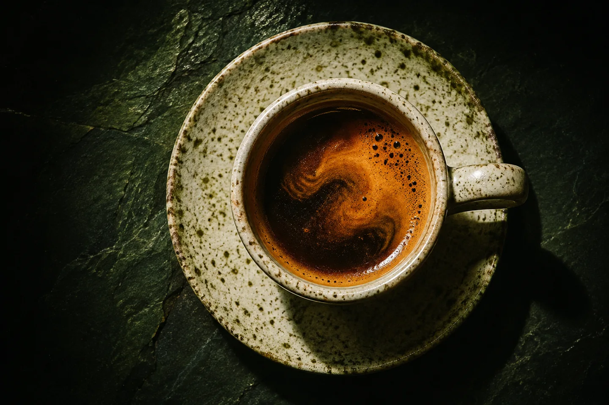
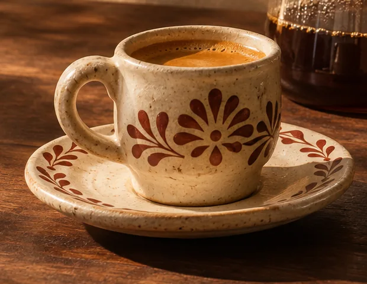

La barra
Jesús Carranza 119
A una cuadra de Santo Domingo, Nono ocupa una barra pequeña en el Centro de Oaxaca. Es una parada para tomar café mientras recorres el barrio.


El lugar
En el Centro de Oaxaca, Nono es una barra pequeña a unos pasos de Santo Domingo. Distintas publicaciones han destacado sus extracciones y el uso de granos oaxaqueños.
En la barra
Las referencias del café describen bebidas de espresso y preparaciones por filtro. El origen y el método disponibles pueden consultarse directamente en la barra.
Explorar la carta
Conócenos
La barra
A una cuadra de Santo Domingo, Nono ocupa una barra pequeña en el Centro de Oaxaca. Es una parada para tomar café mientras recorres el barrio.
El café
El espresso concentra el café en unos sorbos. El filtrado deja pasar el agua por el café molido más despacio. Ambos métodos aparecen en las reseñas de Nono.
La historia
En 2023, la revista oaxaqueña Quixe visitó Nono al acercarse su primer aniversario. Destacó la variedad de extracciones y el uso de granos oaxaqueños.



Todos los días · 07:00–20:00
Horario pendiente de confirmar. Consulta antes de ir.